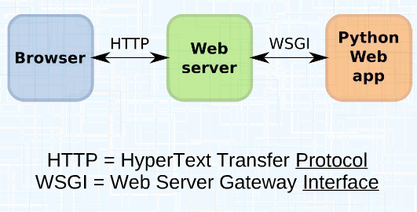
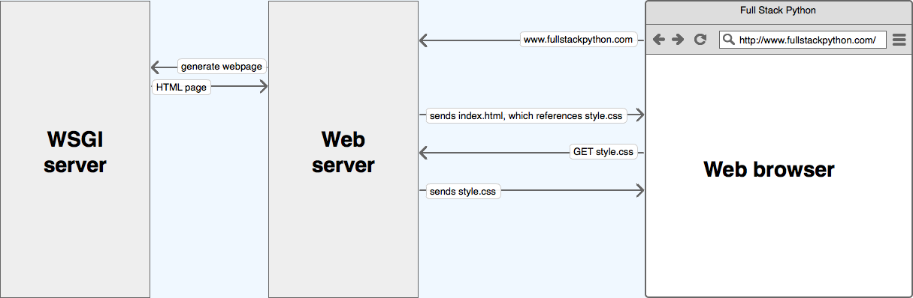
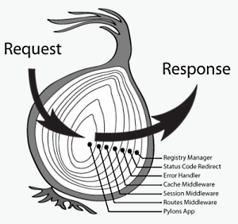
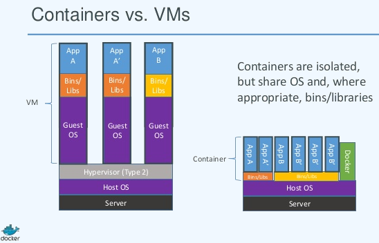
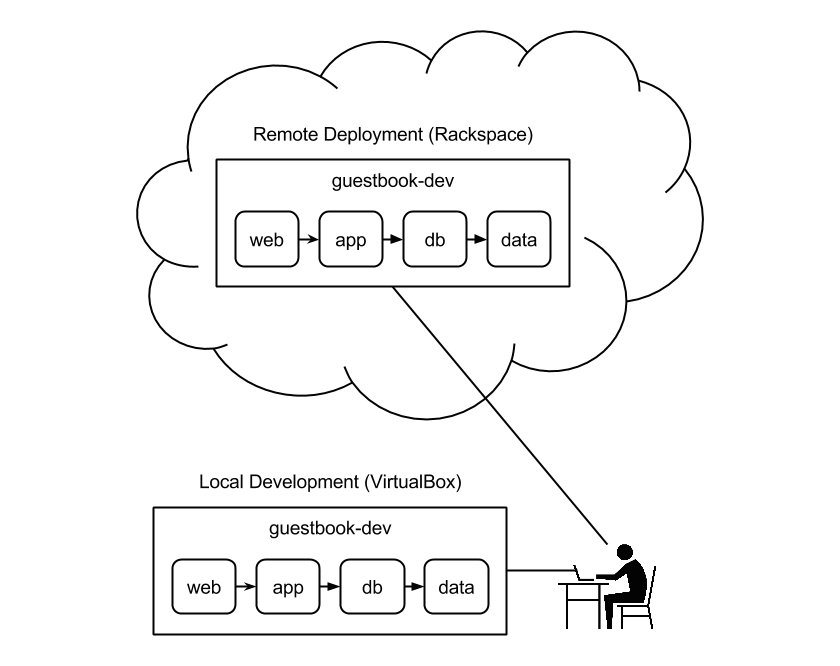

DAI, Despliegue
Desarrollo de Aplicaciones para Internet
Despliegue

Despliegue
Para poner en producción una aplicación web, necesitaremos hacer algún
cambios:
- Deshabiliar el ambiente de depuración
- Cambiar el servidor de web, por el definitivo de producción
Despliegue de Django
Para deshabilitar en el ambiente de desarrollo
en el archivo settings.py, se cambia:
# DEBUG = True, pasa a:
DEBUG = False # y
# ALLOWED_HOSTS = [] pasa a:
ALLOWED_HOSTS = ['*'] # o el que sea en producción
WSGI
Hay que conectar la aplicación con el servidor web definitivo

WSGI
La aplicación funcionará con otro servidor de web
distinto del de desarrollo, que además se encargará
de servir los archivos (el directorio static y el
media )
Django, como el resto de los frameworks de python, necesitan un servidor web con interface
Web Server Gateway Interface
WSGI
Con WSGI, el servidor de web hace una llamada síncrona a la aplicación con toda
la información del request

WSGI
WSGI, tiene previsto que haya middleware entre el servidor web y
la aplicación, a ambos lados del API

gunicorn
gunicorn, es un servidor de web wsgi muy sencillo
de instalar, que substituye al runserver de desarrollo
# para instalar
sudo pip3 install gunicorn
# para ejecutar el puerto 8000
/usr/local/bin/gunicorn mi_app.wsgi --bind: 0.0.0.0:8000
Django ya tiene el archivo .wsgi en el mismo directorio de
setttings.py
Supervisión
Para arrancar y mantener arrancado el servidor gnunicorn podemos
usar supervisord, que vigilará que el
proceso siempre esté ejecutandose
# Añadir al final del arhivo supervisor.conf
[program:gunicorn]
command=/usr/local/bin/gunicorn sitio_web.wsgi --bind 0.0.0.0:8000
directory=/path/donde/este/manage.py
user=elquesea
autostart=true
autorestart=true
redirect_stderr=true
También podremos usar systemd, como se
detalla en el enlace de abajo
nginx
Para servir los archivos, balance de carga, restricciones de acceso, etc, https, etc se puede
usar nginx
server {
listen 80 default_server;
# servidor web para archivos en /static
location /static/ {
alias /var/www/static/;
}
# proxy inverso, se pasa a la aplicación wsgi
location / {
proxy_pass http://127.0.0.1:8000;
proxy_set_header X-Forwarded-Host $server_name;
proxy_set_header X-Real-IP $remote_addr;
}
STATIC
Django dejará de servir los archivos en /static y /media, cuando
esté DEBUG = False , por tanto haremos un script para copiar los archivos
al directorio donde los sirva nginx
#/bin/bash
cp -r static/ /var/www/static
cp -r media/ /var/www/media
Virtualización ligera
Una posibilidad, es usar un contenedores para instalar la aplicación

docker
De esta manera se independiza la instalación del servidor de producción,
el ejecutable va ser siempre el mismo
Además la instalación va a simplificarse al utilizarse scripts
de aprovisionamiento
Dockerfile
from debian:jessie
maintainer yo@correo.es
# variables de ambiente
# código (solo lectura)
env project_dir /Pruebas_django/
# datos: MEDIA_ROOT, db.sqlite (lectura y escritura)
env volume_dir /var/Volumes/Project_django
run apt-get -y update
# lo mínimo para django
run apt-get install -y apt-utils
run apt-get install -y python python-dev python-setuptools
# para instalar pip
run apt-get install -y git
run easy_install -U pip
# donde va a estar la aplicación
add . ${project_dir}
workdir $project_dir
run pip install -r requeriments.txt
# PRODUCCION
run pip install gunicorn
# servidor web y watchdog
run apt-get install -y supervisor nginx
# configuraciones
run cp despliegue/supervisor.conf /etc/supervisor/conf.d/
run cp despliegue/nginx-default /etc/nginx/sites-available/default
run sed -i 's/DEBUG = True/DEBUG= False/' Pruebas_django/settings.py
expose 80
cmd despliegue/collect_static.sh && supervisord
docker-compose
Docker, también se puede usar para desarrollo, con
docker-compose
